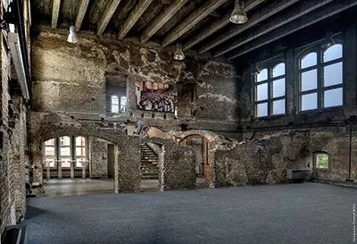
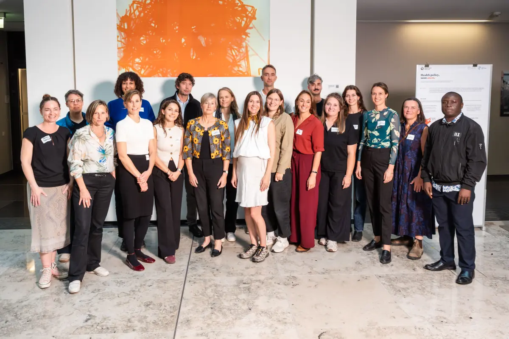
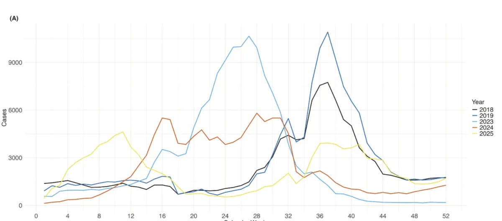
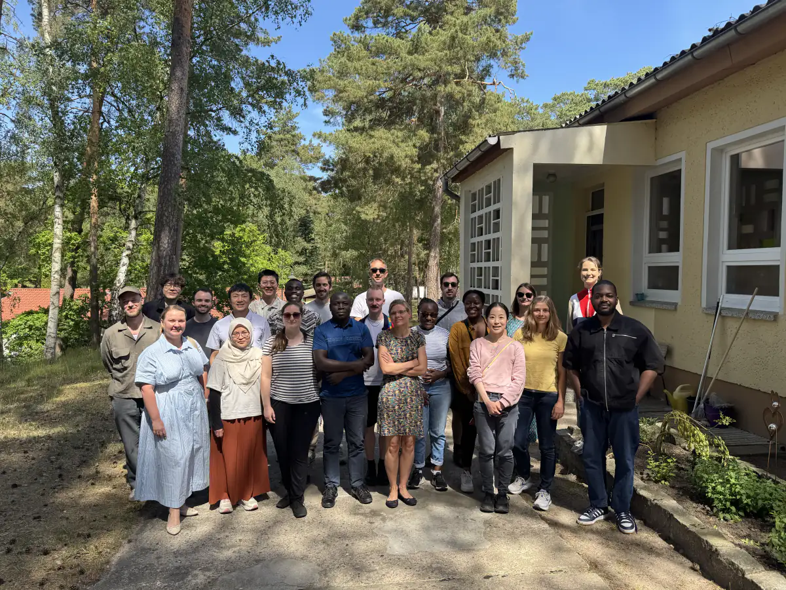
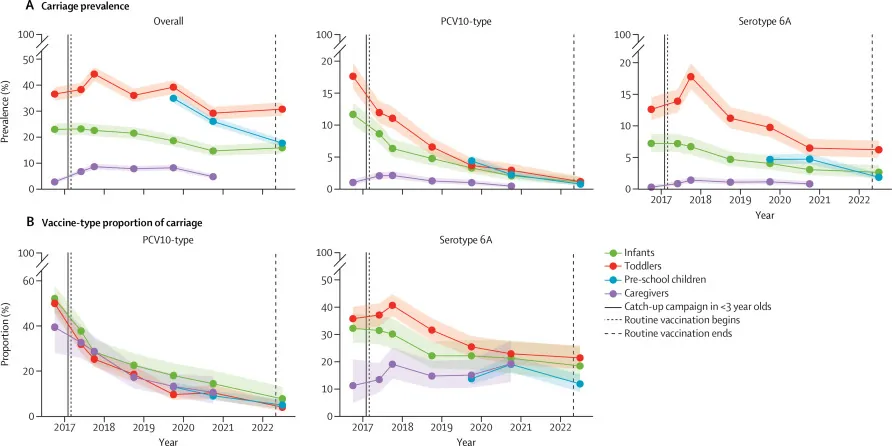
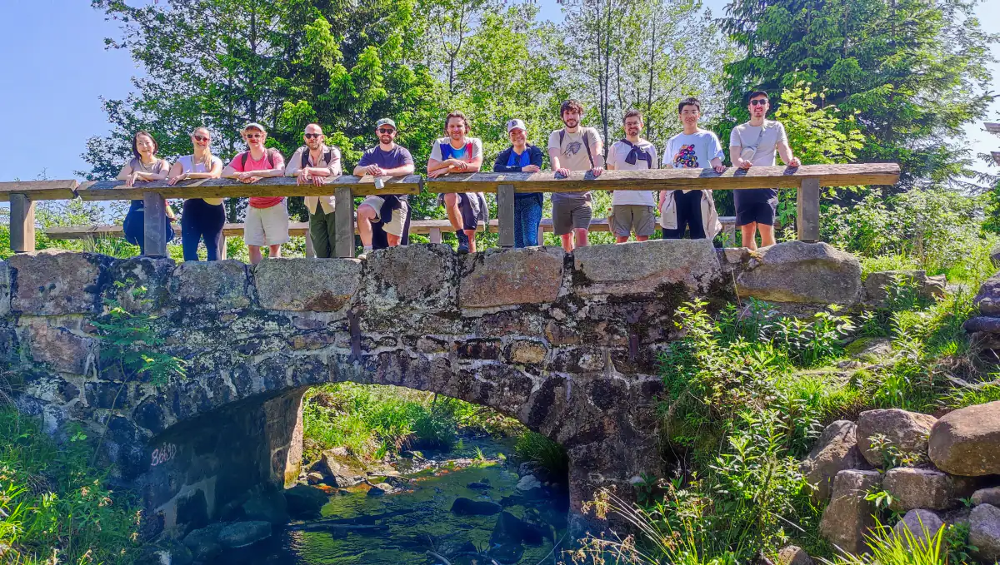

Immunisation
Evaluating optimal immunisation strategies for RSV, pneumococcus, polio, chikungunya and other vaccine-preventable diseases.
Ayaka Monoi, David Hodgson, Julia Mayer, Kaige Dong, Augustine Masinde, Lucy Ingaiza
Charité Center for Global Health
Based in Berlin, we investigate disease burden, transmission patterns and ecological interactions to design effective control strategies.
Understanding the underlying ecological and transmission dynamics is often key to the design of effective control strategies for infectious disease. The IDD group at the Charité Center for Global Health brings together an interdisciplinary team of experts in mathematical modelling, statistics, clinical trials and policy.
We work closely with other centres and international collaborators to improve our understanding of disease dynamics and thereby disease prevention. We host the secretariat of Charité's IDD theme, the Berlin Infectious Disease Dynamics Expertise Network (B-IDDE) and the Pneumococcal and Pneumonia INterest Group (PING). We are an associated member of the Modeling Network for Severe Infectious Diseases (MONID) and run an annual short course, 'Infectious Disease Dynamics: Data Analytics and Mathematical Modelling'.
Evaluating optimal immunisation strategies for RSV, pneumococcus, polio, chikungunya and other vaccine-preventable diseases.
Ayaka Monoi, David Hodgson, Julia Mayer, Kaige Dong, Augustine Masinde, Lucy Ingaiza
Exploring advanced analytical methods and large language models for outbreak response.
Hugo Soubrier, Lukas Hemmers-Pauly, Billy Quilty, Rebecca Lais
Evaluating how climate change and pathogen interactions alter disease risk and the choice of prevention strategies.
Adriana Tibaduiza Torres, Michael Briga, Matej Kriznar
Group lead
Research associate
Research associate
Research associate
Project manager
PhD student
PhD student
PhD student
PhD student
PhD student
PhD student
PhD student
PhD student
PhD student
Guest researcher
Guest researcher
Registration is now open for our in-person dialogue between academic researchers, global health specialists and vaccine manufacturers on 12 November 2026 at the Hörsaalruine, Charité Campus Mitte, Berlin. Places are limited and attendance is subject to CCGH approval.

The IDD group joined colleagues from across the Charité Center for Global Health at this year's CCGH Day, including the PhD students of the Global Health programme, for a day of discussion about our research, ongoing collaborations and new ideas across the Center.

The IDD group is now an associated member of the Modeling Network for Severe Infectious Diseases (MONID), strengthening our connection to Germany's infectious disease modelling community.
Ayaka Monoi, Matej Kriznar, Stefan Flasche and colleagues publish a modelling study in Vaccine evaluating the potential impacts of seasonal versus year-round infant immunisation to prevent RSV hospitalisations in Japan.

The Charité Center for Global Health features researchers from our team in its Researchers Spotlight series, covering their work, motivations and daily research life.
The IDD group hosted a joint strategic scientific networking event with the Helmholtz Centre for Infection Research (HZI) Braunschweig to foster research collaboration.

Billy Quilty and colleagues publish a long-term follow-up of a cluster-randomised controlled trial in The Lancet Infectious Diseases, evaluating the sustained and indirect effects of PCV10 reduced-dose schedules.

A WHO report, prepared with input from the IDD group, sets out how mathematical modelling can inform immunisation policy and decision-making.
Ayaka Monoi and Stefan Flasche publish a modelling study in PLOS Medicine evaluating the benefits and risks of maternal RSV vaccination on mortality.
David Hodgson's study on the optimal seasonal timing of infant immunisation to prevent RSV hospitalisations in Japan is now available as a preprint.
The Charité Center for Global Health and the London School of Hygiene and Tropical Medicine (LSHTM) co-hosted the HUMOD workshop in Berlin at the WHO Hub for Pandemic and Epidemic Intelligence.
The IDD team met for a retreat to plan future research and strengthen collaboration within the group.

Recent papers and preprints by group members, updated automatically from Europe PMC. Group members are shown in teal.
Loading publications…
Our code, analysis pipelines and teaching materials are openly available on GitHub.
Training materials for infectious disease dynamics.
Introduction to Shiny dashboard development.
Training materials for phylogenetic inference.
Institutions we collaborate with, shown on the globe above.